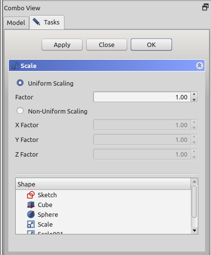

Part Scale/cs
|
Part Změna velikosti |
| Umístění Menu |
|---|
| Part → Změna velikosti |
| Pracovní stoly |
| Part |
| Výchozí zástupce |
| Nikdo |
| Představen ve verzi |
| 1.0 |
| Viz také |
| Std Vytvořit odkaz, Draft Klonovat, Draft Změna měřítka |
Popis
Příkaz  Part Změna velikosti mění měřítko tvarů o zadaný koeficient ve všech směrech nebo o různé koeficienty v jednotlivých světových stranách. V případě různých koeficientů může dojít ke zkreslení tvarů.
Part Změna velikosti mění měřítko tvarů o zadaný koeficient ve všech směrech nebo o různé koeficienty v jednotlivých světových stranách. V případě různých koeficientů může dojít ke zkreslení tvarů.
Změna měřítka probíhá vzhledem ke globálnímu souřadnému systému. Chcete-li měřítko změnit vzhledem k umístění zdrojového objektu, vytvořte místo toho odkaz nebo klon pracovního prostředí Kreslení.
{kind=link}
Příklady změny velikosti
Použití
- Volitelně vyberte jeden nebo více tvarů ve 3D pohledu nebo ve stromovém zobrazení.
- Příkaz lze spustit několika způsoby:
- Stiskněte tlačítko
 Změna velikosti.
Změna velikosti. - Z menu vyberte možnost Díl → Změna velikosti.
- Stiskněte tlačítko
- Otevře se panel úloh Změna velikosti.
- Volitelně lze přepínat mezi Jednotné škálování a Nejednotné škálování.
- Upravte faktoryměřítka.
- Případně klikněte na položku v seznamu ‚ Tvar a (znovu) vyberte jeden tvar.
- (v této fázi je povolen pouze jeden tvar)
- Případně klikněte na Použít pro potvrzení a:
- Vytvořte jeden objekt Změna měřítka pro každý vybraný tvar.
- Pokračujte ve vytváření objektů Změny měřítka.
- Kliknutím na OK zavřete panel úloh a dokončíte příkaz.
- Pro každý vybraný tvar bude vytvořen jeden objekt typu Změna velikosti.
Každý vstupní tvar je umístěn pod příslušným objektem Změny měřítka.
Panel úloh
{kind=link}

- Tlačítko OK vytvoří škálovaný objekt a zavře panel úloh.
- Tlačítko Zavřít zavře panel úloh, aniž by provedlo jakoukoli akci.
- Tlačítko Použít vytvoří zmenšené objekty, ale panel úloh nezavře. Poté můžete vybrat další tvar ze seznamu v dolní části a vytvořit další zmenšené objekty.
- Seznam Tvar: zde vyberete, u kterých tvarů chcete změnit velikost. Pokud je vybráno více tvarů, vytvoří se více škálovaných objektů.
Poznámky
- Non-uniform scaling will turn all edges into B-spline curves, and all faces into B-spline surfaces. These are computationally heavier.
- Points/Vertices can not be scaled as they are dimensionless.
- App Link objects linked to the appropriate object types and App Part containers with the appropriate visible objects inside can also be scaled.
- The task panel does not offer a preview yet. Apply will create a scaled object every time you click it, which can be useful as preview. They will however remain and yet another scaled object will be created as you click OK. Undo can be useful to clean them up before clicking OK.
Properties
See also: Property View.
A Part Scale object is derived from a Part Feature object and inherits all its properties. It also has the following additional properties:
Data
Scale
- ÚdajeBase (
Link): The shape to scale. - ÚdajeUniform (
Bool): Controls uniform vs non-uniform scaling. - ÚdajeUniform Scale (
Float): The scale factor for uniform scaling. - ÚdajeXScale (
Float): The X-scale factor for non-uniform scaling. - ÚdajeYScale (
Float): The Y-scale factor, idem. - ÚdajeZScale (
Float): The Z-scale factor, idem.
- Creation and modification: New Sketch, Extrude, Revolve, Mirror, Scale, Fillet, Chamfer, Face From Wires, Ruled Surface, Loft, Sweep, Section, Cross-Sections, 3D Offset, 2D Offset, Thickness, Project on Surface, Appearance per Face
- Boolean: Compound, Explode Compound, Compound Filter, Boolean Operation, Cut, Union, Intersection, Connect Shapes, Embed Shapes, Cutout Shape, Boolean Fragments, Slice Apart, Slice to Compound, Boolean XOR, Check Geometry, Defeaturing
- Other tools: Box Selection, Shape From Mesh, Points From Shape, Convert to Solid, Reverse Shapes, Simple Copy, Transformed Copy, Shape Element Copy, Refine Shape, Set Tolerance, Persistent Section Cut, Attachment
- Preferences: Preferences, Fine tuning
- Getting started
- Installation: Download, Windows, Linux, Mac, Additional components, Docker, AppImage, Ubuntu Snap
- Basics: About FreeCAD, Interface, Mouse navigation, Selection methods, Object name, Preferences, Workbenches, Document structure, Properties, Help FreeCAD, Donate
- Help: Tutorials, Video tutorials
- Workbenches: Std Base, Assembly, BIM, CAM, Draft, FEM, Inspection, Material, Mesh, OpenSCAD, Part, PartDesign, Points, Reverse Engineering, Robot, Sketcher, Spreadsheet, Surface, TechDraw, Test Framework
- Hubs: User hub, Power users hub, Developer hub